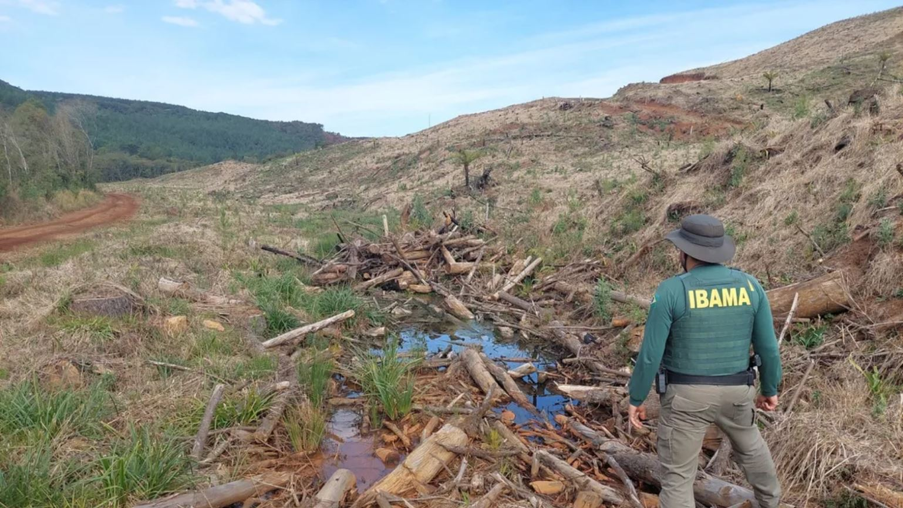

Política Facção monitorava rotina de Moro desde janeiro, aponta investigação Facção tinha ao menos 11 pessoas como alvo de ataques Atentados seriam retaliação por restrições a visitas em presídios
Tecnologia 'Ampulheta de fogo': James Webb mostra região de formação Dois sóis fez fãs de ficção científica lembrarem do planeta Tatooine. Cerca de 40 anos-luz de distância da Terra
Esporte Deu muito ruim mesmo no paulistão 2023 Professo de futebol está carente e mete bola para dentro Polícia Investiga o caso do maníaco do artilheiro
Cultura 'John Wick 4: Baba Yaga' é sequência exaustiva de tiros Cenas de ação são as mais bem feitas da franquia Cada uma poderia ter mais de dez minutos a menos Filme cansa apesar de ser melhor que o terceiro
Facção monitorava rotina de Moro desde janeiro, aponta investigação Facção tinha ao menos 11 pessoas como alvo de ataques Atentados seriam retaliação por restrições a visitas em presídios
Sem Lula, Haddad adia ida à China; empresários vão manter agendas Ministro da Fazenda integraria comitiva brasileira. Lula e Haddad abordariam relações comerciais Senador Rodrigo Pacheco também cancelou viagem
 Ibama anula despacho do governo Bolsonaro que barrava cobrança em multas ambientais Procedimento poderia resultar no cancelamento de 183 mil autos de infração, segundo a AGU. Punição contra crimes ambientais estão sendo aplicados
Kassab anuncia propostas do PSD para nova âncora fiscal A proposta do PSD é apresentar o arcabouço fiscal enquanto ainda não há uma definição da equipe econômica do Governo Lula
'Ampulheta de fogo': James Webb mostra região de formação Dois sóis fez fãs de ficção científica lembrarem do planeta Tatooine. Cerca de 40 anos-luz de distância da Terra
Facebook é condenado a indenizar brasileiros em R$ 500 por vazamento de dados Cerca de 530 milhões de usuários tiveram dados vazados Pelo menos 8 milhões são brasileiros Saiba como se proteger
França proíbe uso do TikTok em celulares de funcionários públicos Além do país de Emmanuel Macron, Estados Unidos, Canadá e outras nações já anunciaram o banimento. Dispositivos de servidores públicos com o app podem ser alvos de espionagem da China
Imagens falsas criadas por IA que mostram Donald Trump sendo preso viralizam nas redes sociais Fotografias, criadas pelo Midjourney, exibem o ex-presidente brigando com policiais e 'malhando' na cadeia.
Deu muito ruim mesmo no paulistão 2023 Professo de futebol está carente e mete bola para dentro Polícia Investiga o caso do maníaco do artilheiro
Simule o sorteio da Libertadores 2023 Escolha dos grupos vai acontecer na próxima segunda-feira Times do mesmo país não podem se enfrentar com uma exceção: equipes que vieram da fase prévia
Adriel comemora dois pênaltis defendidos em classificação Atuações do Grêmio: Adriel brilha nos pênaltis; Thaciano se destaca Grêmio sofre punição e fica impedido de inscrever jogadores Maurício Saraiva: Finalista assustado
Clube uruguaio aciona Fifa contra o São Paulo Existe uma dívida na negociação de Calleri Deportivo Maldonado era o dono dos direitos do atacante Tricolor quer que entidade defina valor a ser pago
'John Wick 4: Baba Yaga' é sequência exaustiva de tiros Cenas de ação são as mais bem feitas da franquia Cada uma poderia ter mais de dez minutos a menos Filme cansa apesar de ser melhor que o terceiro
Rock in Rio 2022 recicla mais de 250 toneladas de resíduos R$ 230 mil com leilão de guitarras Números são do balanço da edição do ano passado Preocupação social e sustentável do festival
'Thor: Amor e Trovão' não supera 'Ragnarok' Veja lista com todos os filmes do estúdio produções de super-heróis da editora renderam quase US$ 26 bilhões
As mulheres que desafiam o machismo no universo dos games Jogadoras chegam a sofrer ameaças online de estupro Mas lutam para reverter esse cenário